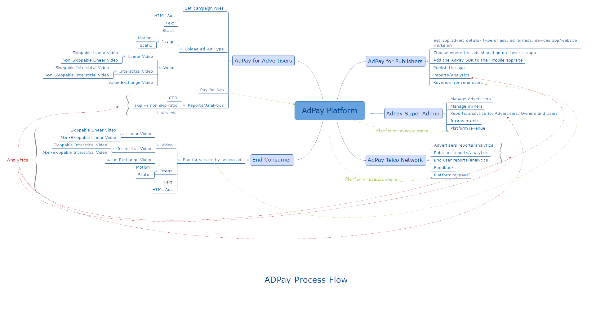

ADPay is an ad service that allows advertisers show ads on whitelisted services on telco networks, while providing revenue for both the networks and the publishers of these services, with the end user using these ads as a form of payment to access publisher services. The client, iConcepts, approached my team and I after the acquisition of Sangalo to build this solution.
The product goal was to build a simple ad platform that integrated with both the publisher's services at point of payment for the end user with reporting features for the all parties except the end user.
One of the reasons I love the design sprint is because it is a great process for helping you both generate killer ideas and move those ideas forward. In other words, Design Sprints help you get that project mojo going.
We decided to use a design sprint to refine the client's high-level idea and take it to MVP. We had 2 design sprints- for identifying our primary customer+solutions and the second for building out the rest of the product.
Using a design sprint to refine a client's idea is great, especially if you can involve the client in the process. We were able to sort through ideas, set long term goals, interview our experts and users (a content partner for the networks, an ad agency. 1 of the 4 major telco networks and 3 groups of end users) and decide on our most important customer- Advertisers.
Here is our storyboard:
and here is one of the prototypes used for Friday testing.

Using the design sprint gave us a great starting point. However, we still needed to take the prototype to a more robust product to satisfy the client. Using a Lean-AGILE execution plan (Lean- design led development; AGILE- ship fast, ship often), we were able to build on the work from the design sprint and handover to the client within 4 weeks.
Here is a video from an end user test testing a user's experience with a 30 second ad versus a 15 second ad.
Most of lessons learnt really apply to the design sprint process, maybe because this was one of the first projects my team and I shipped with it playing a major role;
- Expect to feel confused and overwhelmed at the end of day two.
- Sometimes it is easy to blank on what the next step is; writing the schedule on the whiteboard helps set up expectations for clients and helps you remember what is coming up next.
- It whole process gets to you sometimes. Having someone else in the room to support you is recommended, so try not to do sprints solo.
Below is the experience flow for the advertiser, along with the wireframe for the ad details page that was used for user research.